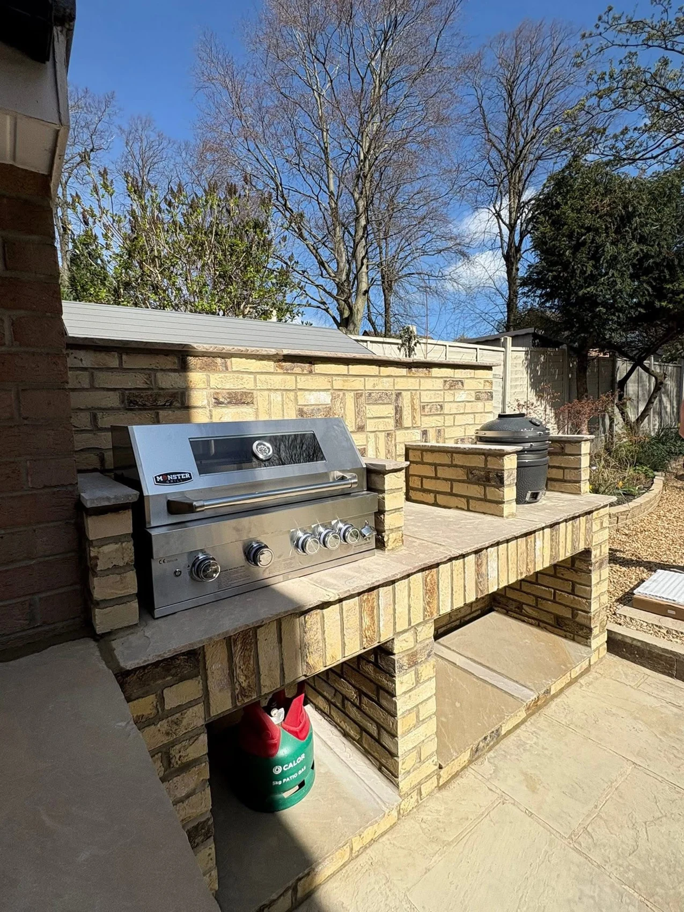
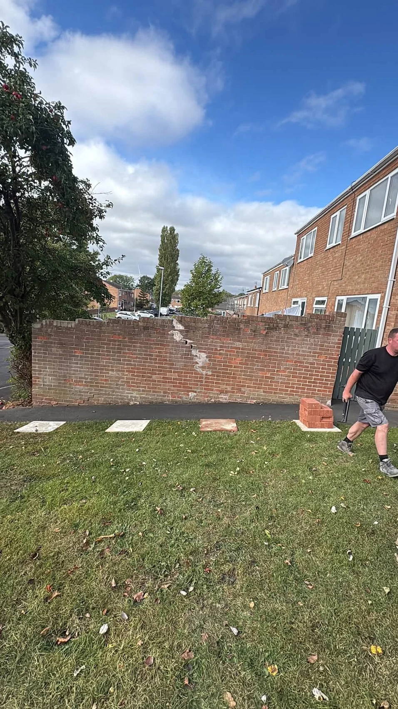
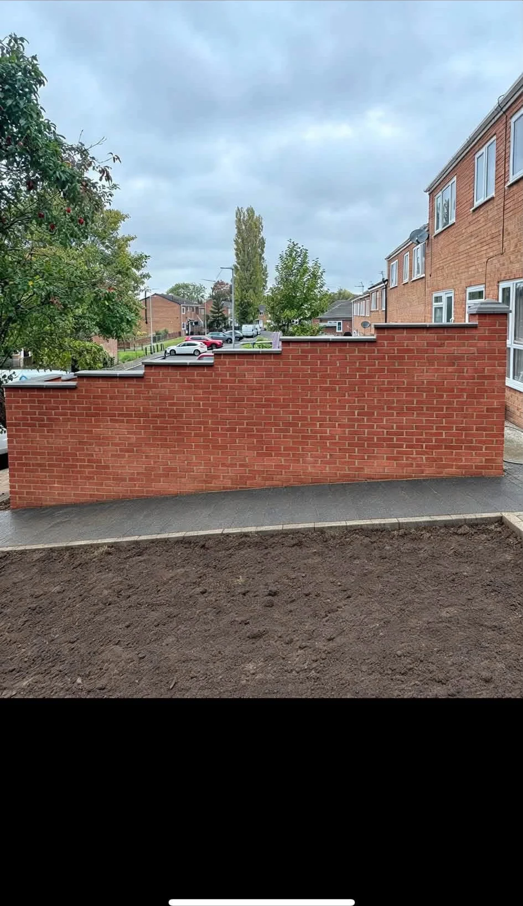

AUSTIN CONSTRUCTION · NORTH EAST
See the work.
Imagine your space.
Brickwork, patios, landscaping and outdoor living projects.
BEFORE & AFTER
A stronger wall.
A fresh start.
A damaged boundary wall before the work, followed by the rebuilt brick wall with a stepped profile and dark coping stones.


OUR PROJECTS
The Austin project gallery.
Select any photograph to see the full image.
ON SITE WITH AUSTIN
Take a closer look.
Two project videos from Austin Construction.
REQUEST A QUOTE
Let’s talk about your project.
Tell us what you have in mind. This form opens a WhatsApp draft with all your details, ready for you to review, add photos and send.